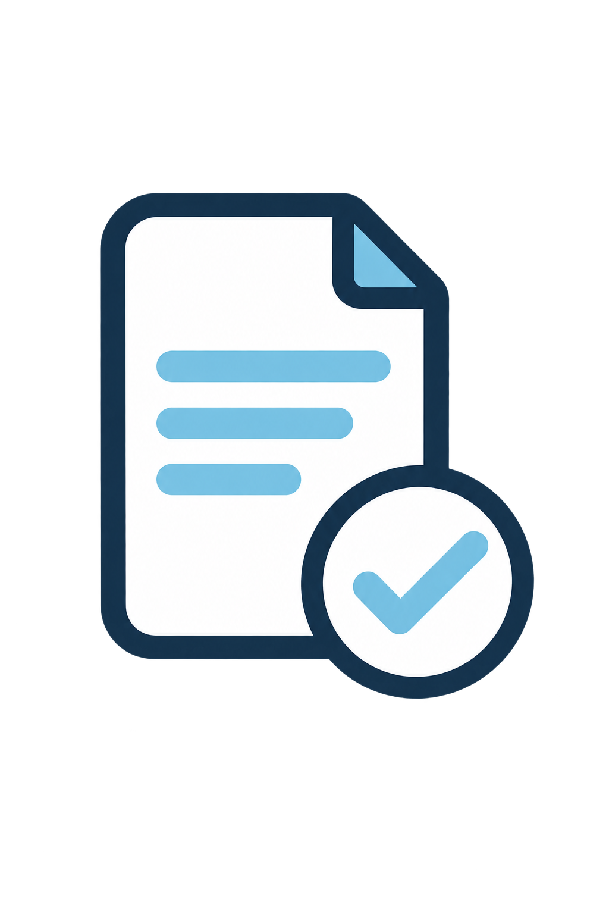
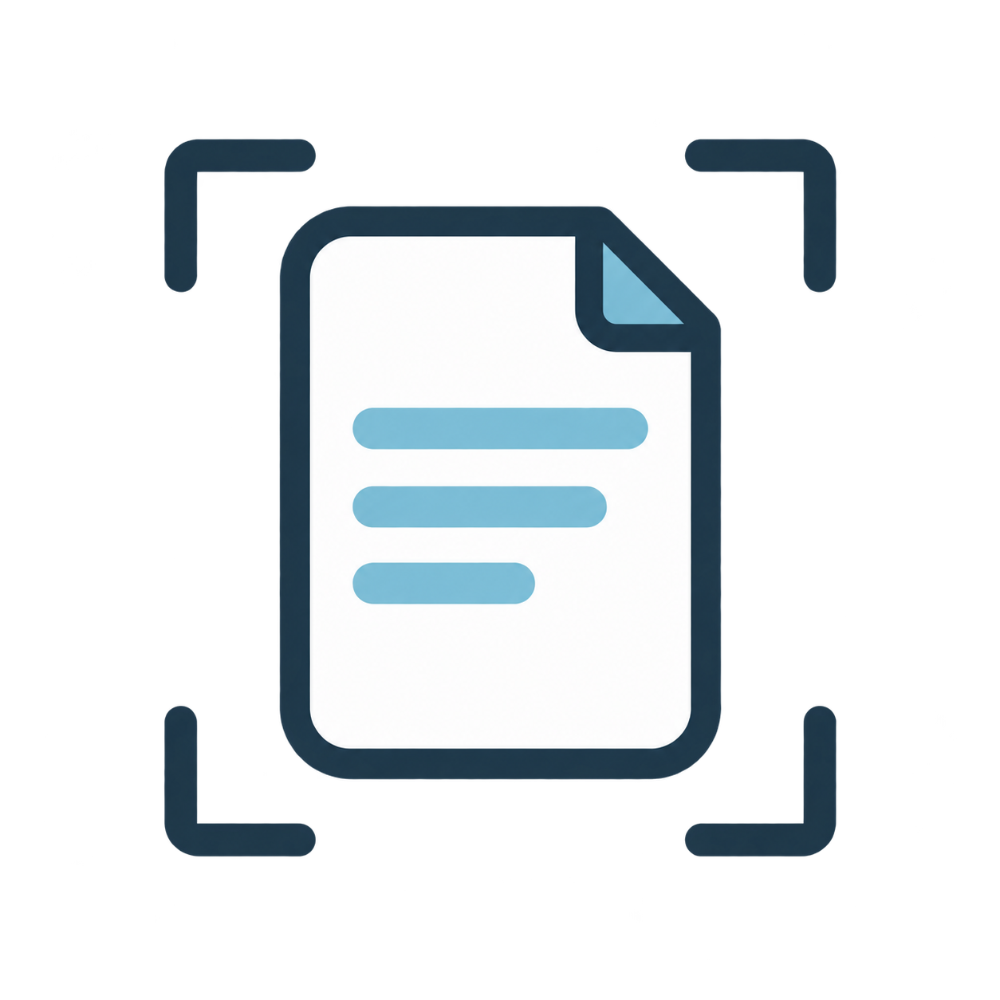
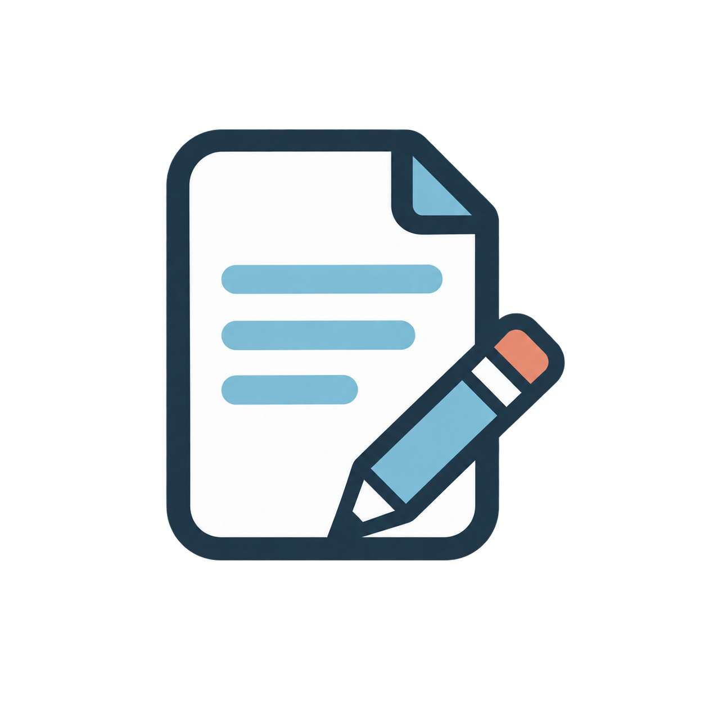
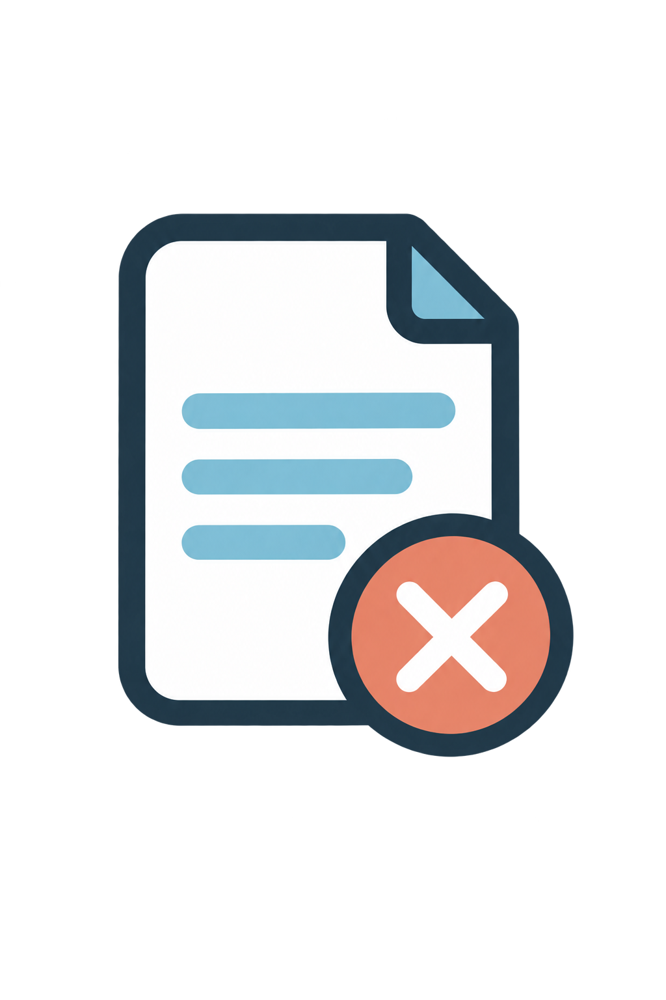
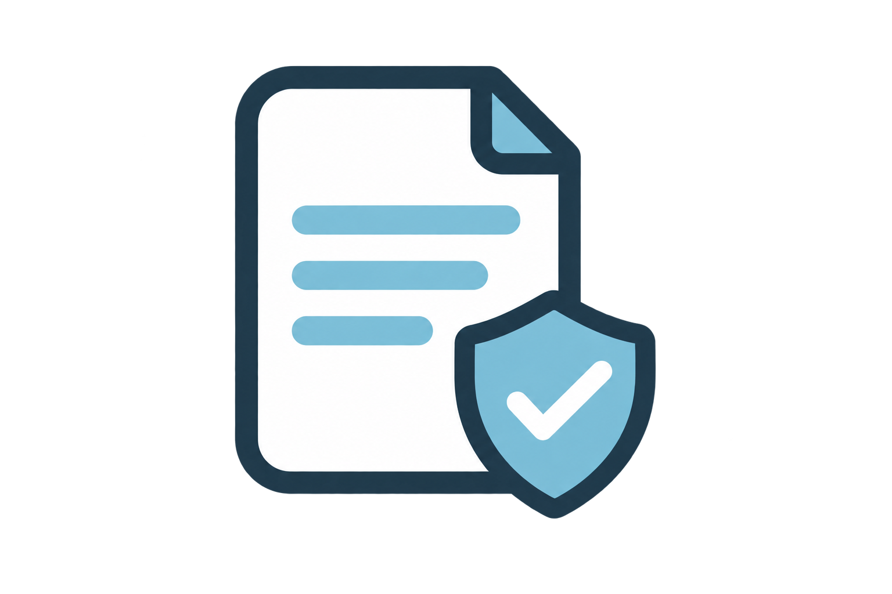
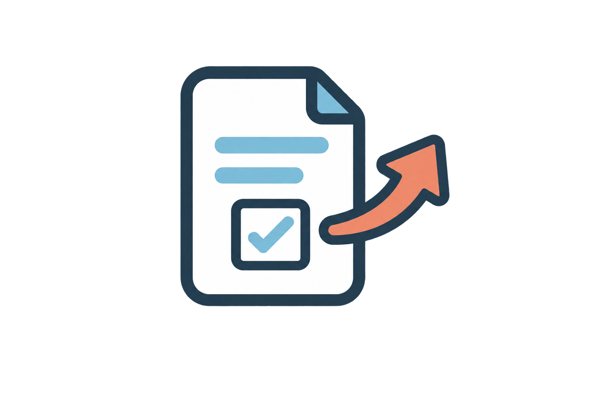
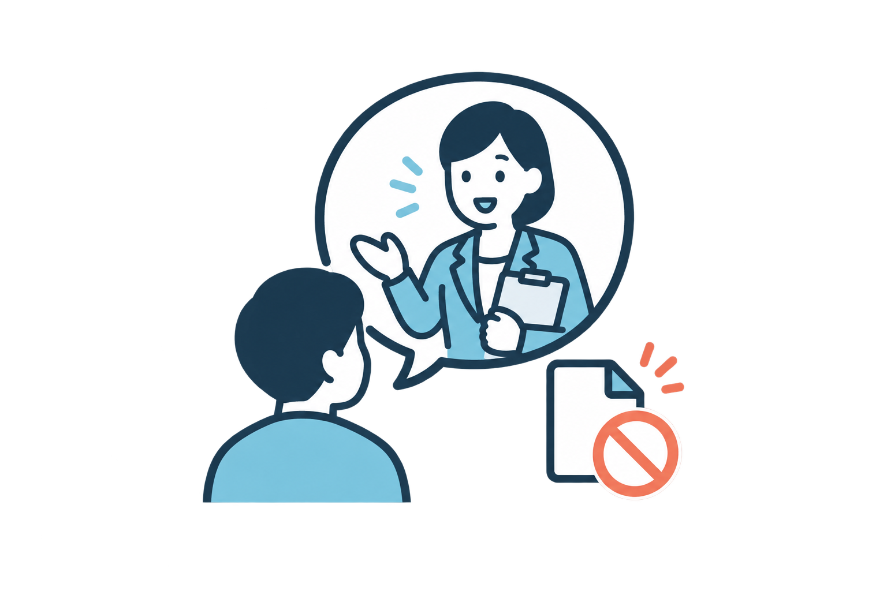
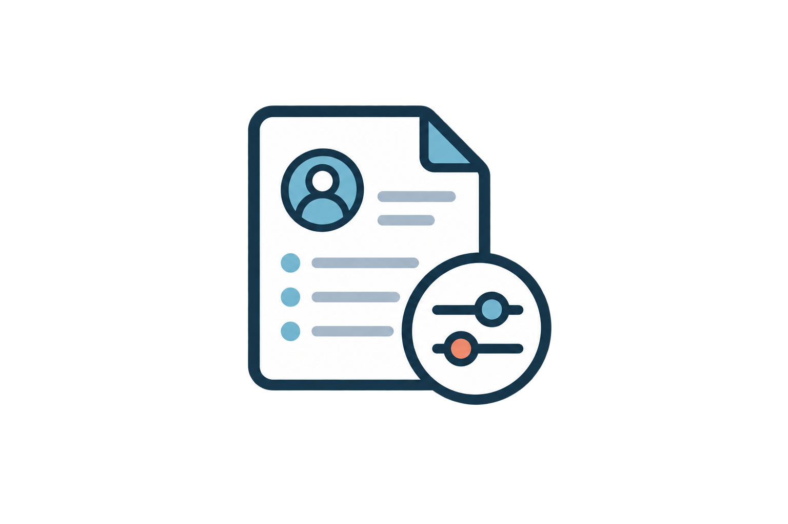

このまま使ってよいか、確認したい方へ。
現在使っている契約書や、インターネットで見つけた雛形、取引先から提示された契約書についてご相談いただけます。
内容を確認し、分かりにくい部分や、仕事内容と合っていない可能性がある部分を整理します。
- 雛形を自分の仕事に合わせて見直したい
- 契約内容を分かりやすく説明してほしい
- 必要な項目が抜けていないか確認したい
- 取引先から提示された内容を確認したい
個人事業主のための契約書相談
今ある契約書の見直しも、
これから用意したい契約書のご相談も。
個人事業主の仕事内容や取引の流れに合わせて、
必要な内容を一緒に整理します。
対面・オンライン対応／契約書がなくてもご相談いただけます
WORRIES
個人で仕事をしていると、契約書について考える場面はあっても、何をどこまで決めればよいのか分からないことがあります。
分からない部分をそのままにせず、まずは現在の状況から整理してみましょう。
FOR YOUR WORK
現在の状況によって、必要な対応は異なります。
つむぎ行政書士事務所では、契約書の有無にかかわらず、仕事内容や取引の流れを伺ったうえで、次に何をすべきか整理します。

現在使っている契約書や、インターネットで見つけた雛形、取引先から提示された契約書についてご相談いただけます。
内容を確認し、分かりにくい部分や、仕事内容と合っていない可能性がある部分を整理します。
契約書をまだ持っていなくても、ご相談いただけます。
仕事内容、取引相手、仕事の進め方などを伺い、契約書が必要か、事前にどのような条件を決めておくとよいかを整理します。
契約書は、相手を疑うためのものではありません。
お互いが同じ認識で、安心して仕事を進めるための準備です。
OUR SUPPORT
つむぎ行政書士事務所では、個人事業主の契約書に関するご相談を承っています。
難しい言葉を並べて一方的に説明するのではなく、普段の仕事の流れに置き換えながら、必要な内容を一つずつ確認します。
契約書の作成をすぐに勧めるのではなく、現在の契約書を活用できるか、どのような対応が必要かを整理したうえでご案内します。
契約書の内容や当事者間の状況によっては、当事務所で対応できない場合があります。その場合は、必要に応じて適切な相談先をご案内します。
FOR SOLE PROPRIETORS
業種を問わず、お客さまや取引先と直接契約して、商品・サービス・制作物などを提供している個人事業主の方が対象です。
Webデザイナー、ライター、カメラマン、イラストレーター、動画制作者など
オンライン講師、コーチ、コンサルタント、研修講師など
美容サロン、各種教室、レッスンサービスなど
ハンドメイド作家、オリジナル商品販売、オンラインショップ運営者など
SNS運用、オンライン事務、広報支援、各種代行サービスなど
上記にない業種や契約書についてもご相談いただけます。対応可能か分からない場合も、まずは30分無料相談をご利用ください。
CHECK POINTS
必要な項目は仕事内容によって異なります。次のような内容を、仕事の流れに合わせて確認します。

どこまでが依頼内容で、どこからが追加対応になるのか。
金額、支払方法、支払期限はどのようになっているか。
いつまでに納品・提供し、遅れた場合はどう対応するか。

修正回数や追加料金が発生する条件は決まっているか。

途中で依頼がなくなった場合の対応は決まっているか。

制作物の使用範囲や、権利の扱いは明確になっているか。
仕事を通じて知った情報を、どのように取り扱うか。
FLOW
無料相談を受けたからといって、その場で正式に依頼する必要はありません。必要な対応と見積もりをご確認いただき、納得した場合のみご依頼ください。
STEP 1
LP内の予約フォームから、相談方法、希望日時、現在のお悩みをお送りください。
STEP 2
事務所からメールでご連絡します。日程の確認が取れた時点で、予約確定となります。

STEP 3
確認を希望する契約書や雛形がある場合は、相談前にお送りください。契約書を持っていない方は、送付不要です。
STEP 4
オンラインまたは青澄市の事務所で、仕事内容、取引の流れ、不安に感じていることを伺います。
STEP 5
必要な対応と料金をご説明します。内容を持ち帰って検討していただけます。正式なご依頼を強制することはありません。
OUR PROMISE
専門用語だけで説明せず、普段の仕事内容や取引の場面に置き換えてお伝えします。

まだ契約書を用意していない方には、何を決めておく必要があるかという段階からご案内します。
30分無料相談後に、必要な対応と見積もりをご案内します。内容を確認してからご検討いただけます。
愛知県青澄市の事務所での対面相談と、オンライン相談から選べます。

一般的な雛形をそのまま当てはめるのではなく、仕事内容や取引の流れを伺ったうえで必要な内容を考えます。
ABOUT
個人で仕事をする方から契約書についてお話を伺うと、「必要なのは分かっているけれど、何から始めればよいか分からなかった」という声を多く耳にします。
契約書には、普段あまり使わない言葉や、意味を判断しにくい表現が数多くあります。
だからこそ、分からないことをそのままにせず、気軽に質問できる相手が必要だと考えています。
つむぎ行政書士事務所では、一方的に答えを押しつけるのではなく、仕事内容や現在の状況を伺いながら、一つずつ情報を整理します。
契約書がある方も、まだ用意していない方も、まずは現在感じている不安をお聞かせください。
愛知県青澄市の事務所で、資料を一緒に確認しながらご相談いただけます。落ち着いてお話しいただけるよう、予約制の相談スペースをご用意しています。
遠方の方や、事務所へ来る時間を取りにくい方は、オンラインでご相談いただけます。契約書などの資料は、事前に指定の方法でお送りください。
FEE
契約書の種類、文章量、修正範囲、ご希望の納期によって、必要な対応や料金は異なります。30分無料相談で現在の状況を確認し、正式なご依頼前に、対応内容と見積もりをご案内します。
初回相談 30分無料
FAQ
はい、ご相談いただけます。仕事内容や取引の流れを伺い、契約書が必要か、事前にどのような内容を決めておくとよいかを整理します。
はい、確認できます。雛形が現在の仕事内容や取引方法に合っているか、分かりにくい部分や不足している可能性がある項目を確認します。
ご相談いただけます。ただし、契約内容や当事者間の状況によっては、当事務所で対応できない場合があります。初回相談で状況を確認し、対応の可否をご案内します。
30分無料相談では、仕事内容、契約書の有無、不安に感じている点を伺い、今後必要になりそうな対応をご案内します。契約書全文の詳細な確認や修正、作成は、正式なご依頼後に行います。
いいえ。無料相談後に、必要な対応と見積もりをご案内します。内容をご確認いただき、納得した場合のみ正式にご依頼ください。
はい。相談前に指定の方法で契約書をお送りいただき、オンラインでお話を伺います。資料の送付方法は、予約確定後にご案内します。
幅広い業種の方からご相談を承ります。ただし、契約書の種類や内容によっては対応できない場合があります。対応可能か分からない場合も、まずは初回相談でお問い合わせください。
当事者間で意見の対立が生じている場合など、状況によっては行政書士が対応できないことがあります。現在の状況を伺い、当事務所で対応できない場合は、適切な相談先をご案内します。
RESERVATION
契約書を持っている方も、まだ用意していない方もご相談いただけます。
フォーム送信時点では予約確定ではありません。事務所からの返信をもって、相談日時の確定となります。
本フォームはポートフォリオ用のデモです。現段階では入力内容の送信・実際の予約は行われません。
契約書がある方も、まだ用意していない方も、最初から答えを決めておく必要はありません。仕事内容や取引の流れを伺い、必要な対応を一緒に整理します。
30分無料相談を予約する対面・オンライン対応／正式なご依頼は見積もり確認後にご検討いただけます